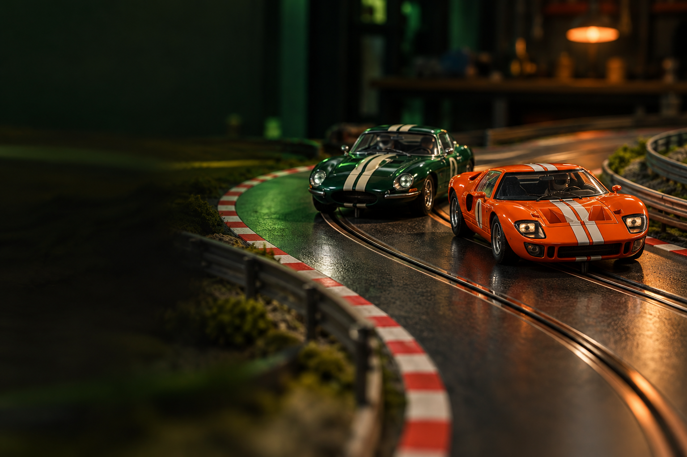
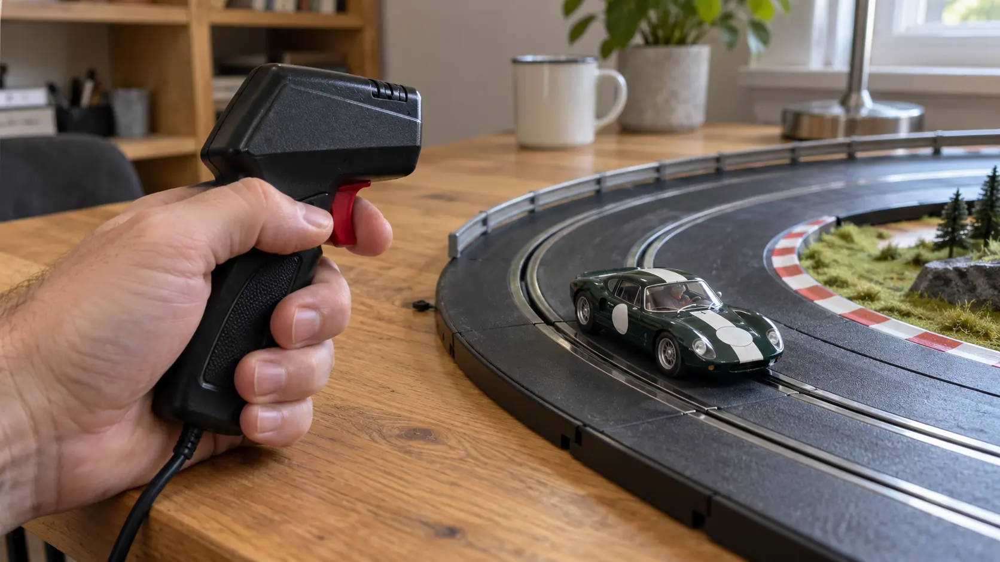
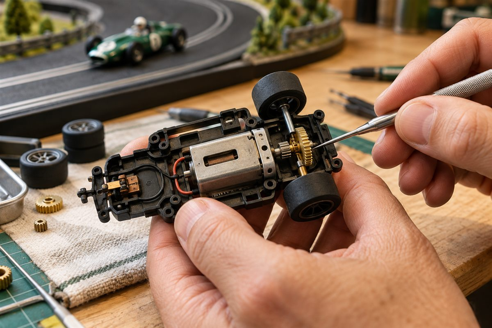
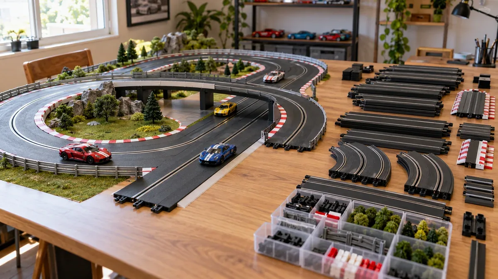
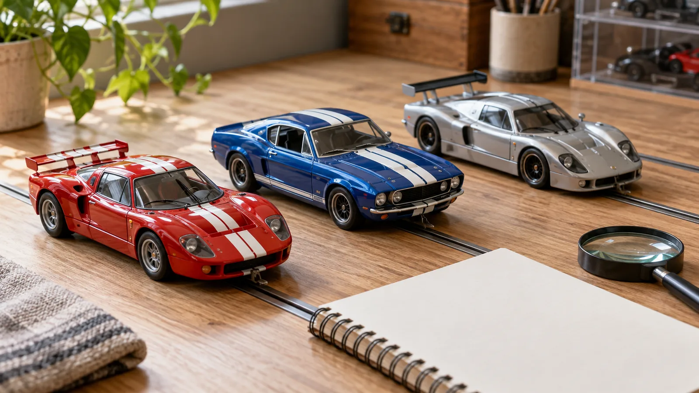
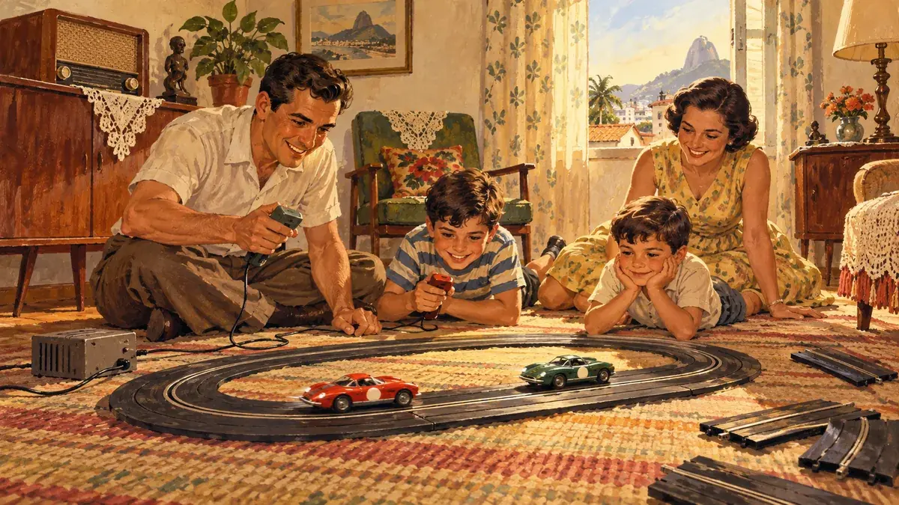
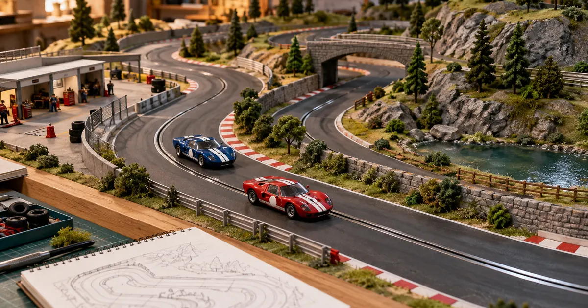

O prazer de
acelerar junto.
Um ponto de encontro para explorar o universo do autorama — da primeira pista montada às histórias que atravessam gerações.
Veja os artigos
GRID / 01 — LARGADAEncontre seu próximo assunto
Explore por Categoria
Explore conteúdos sobre pilotagem, mecânica, pistas, miniaturas e tudo o que envolve o universo do autorama.

Técnicas de PilotagemControle, frenagem, trajetória e aderência para conduzir com mais consistência.5 artigos
Mecânica e PreparaçãoConheça transmissão, eixos, rodas e cuidados de inspeção.2 artigos
Montagem e Projetos de PistasPlanejamento, traçados, bases e projetos para diferentes espaços.6 artigos
Colecionismo e MiniaturasEscolha, identifique, organize e conserve sua coleção.5 artigos
História do AutoramaConheça a trajetória do hobby, seus modelos e mudanças ao longo do tempo.5 artigos
Cenários e ModelismoPlaneje paisagens, boxes, arquibancadas e detalhes em miniatura.4 artigosSérie de pilotagem
Curvas mais rápidas, com controle.
Aprenda a ler o carro, o trilho e o ritmo da pista.
Procurando algo no circuito?
A busca ficará mais útil quando os primeiros artigos forem publicados.